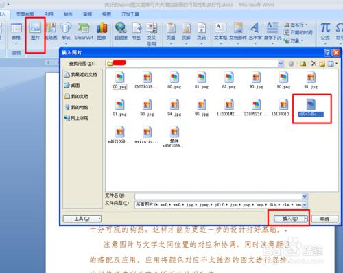
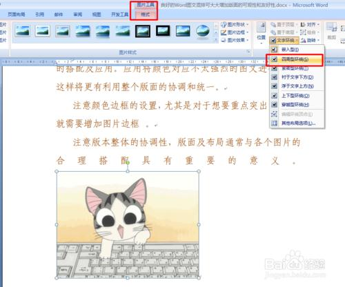
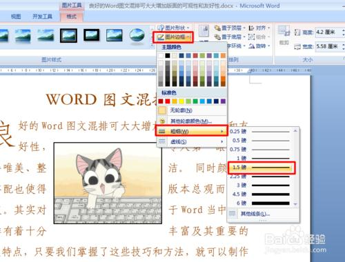
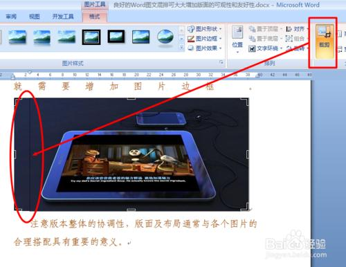
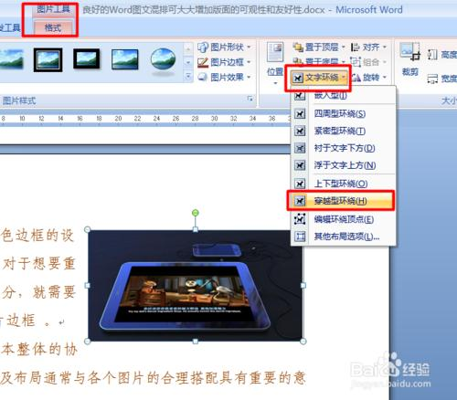

基本资源
1、首先打开要进行编辑的文档，点击“插入”→“图片”，并从打开的窗口中选择相关图片进行插入操作。

2、在选中图片的前题下，点击“格式”→“文字环绕”→“四周环绕”。

3、此时图片可被任意拖动，同时位于图片下方的文字将自动环绕在图片的四周。其中一种排版效果如图：
4、当然，为了更多突出的显示图片，我们也可以为其增加边框：在“格式”工具栏中点击“图片边框”→“粗细”→“1.5磅”，即可设置边框粗细。

5、同时我们也可以进入边框颜色的设置。
6、另外，我们还可以设置上下行图文混排样式。插入一空行，接着插入一张图片到当前行，并设置其大小，即可实现上下行图文混排。
7、有时，我们所插入的图片在大小上可能并不符合实现需求，这时我们可以利用“格式”→“裁剪”工具将图片进行裁剪。如图：

8、裁剪完成后，点击“格式”→“文字环绕”→“穿越性环绕”项，使图片穿越文字进行摆放。

9、当然，我们还可以对其进入更进细致的调整，以满足自己的需求。最终效果如图所示：